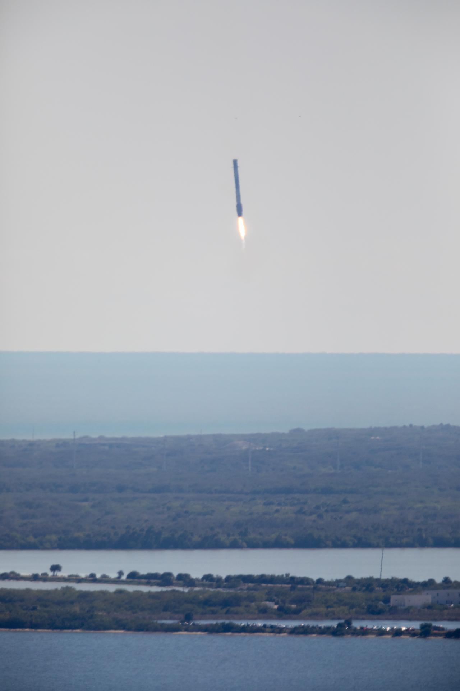
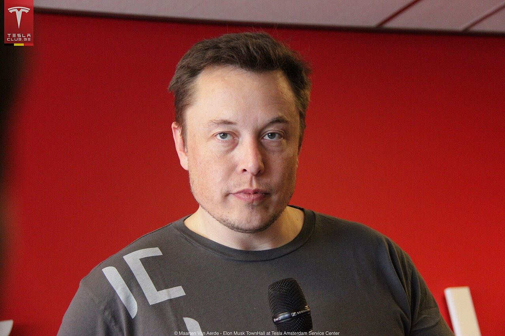
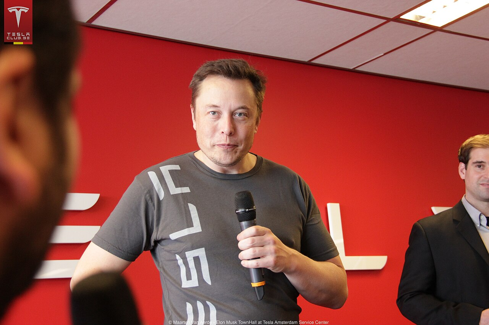
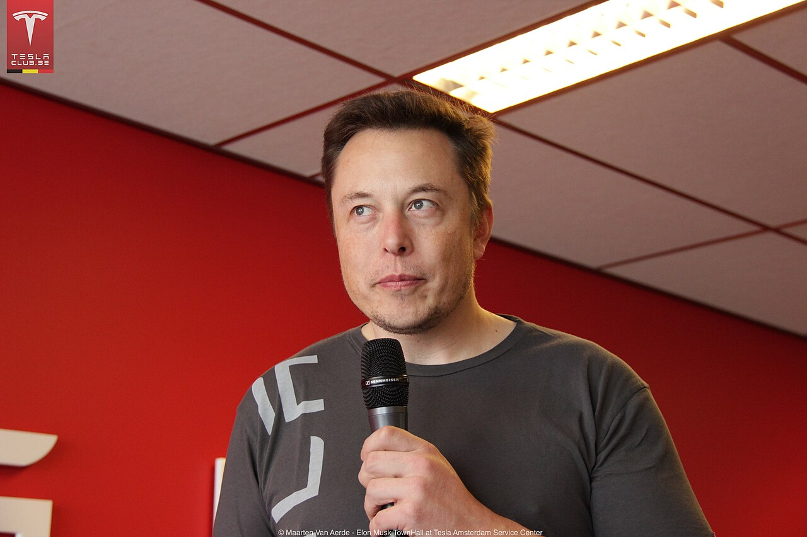
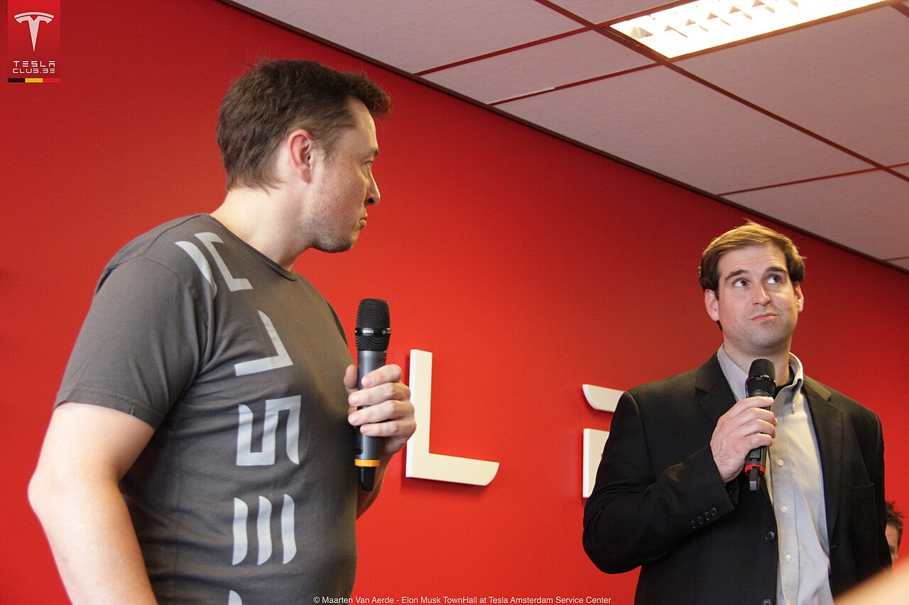

1971
Nasce em Pretória, África do Sul.
Perfil documental · 1971 — presente
Cinco atos sobre uma trajetória que atravessou o software, o foguete, o automóvel e a praça pública — montada apenas com registro público.
Ato I
A biografia começa longe de qualquer indústria que ele viria a ocupar.
Elon Musk nasceu em Pretória, na África do Sul, em 1971. Aos doze anos vendeu um jogo de computador que havia escrito sozinho — o primeiro registro público de um padrão que se repetiria: construir a coisa inteira antes de perguntar se havia mercado para ela. A adolescência transcorre longe do Vale do Silício, e a mudança para a América do Norte antecede qualquer empresa.
A primeira companhia foi a Zip2, software de publicação para jornais que tentavam existir na internet. Em 1999 ela foi vendida por US$ 307 milhões. O produto era mundano; o resultado, não. Foi ali que a engenharia deixou de ser vocação e virou capital — a matéria-prima de tudo o que veio depois.
Em seguida veio a X.com, banco pela internet numa época em que a expressão soava imprudente. A fusão que se seguiu deu origem ao PayPal, vendido ao eBay em 2002 por US$ 1,5 bilhão. Aos trinta e um anos, ele tinha dinheiro suficiente para parar. Dedicou-o a dois setores conhecidos por consumir fortunas sem devolvê-las: foguetes e automóveis.
Ato II
Exposição longa de um lançamento noturno · NASA
SpaceX · fundada em 2002
A tese era simples de enunciar e cara de provar: um foguete que volta inteiro custa outra ordem de grandeza.
A SpaceX foi fundada em 2002 para reduzir o custo de acesso ao espaço. O Falcon 1 falhou três vezes seguidas. A quarta tentativa, em 2008, alcançou a órbita — a empresa estava a um lançamento do fim. Em 2015, um propulsor do Falcon 9 voltou e pousou de pé, convertendo o trecho mais caro do voo em hardware reutilizável.
Em 2020 a empresa levou astronautas à Estação Espacial Internacional, a primeira vez que uma companhia privada o fez. Starlink e Starship seguem em desenvolvimento: um voltado à conectividade em órbita baixa, o outro a cargas e destinos que ainda não têm cronograma fechado.

Ato III
Tesla · investidor em 2004, CEO em 2008
O carro elétrico existia havia um século. Faltava alguém disposto a vendê-lo como objeto de desejo.
Musk entrou na Tesla como investidor em 2004 e assumiu como CEO em 2008. O roteiro foi declarado cedo e cumprido em ordem: um esportivo caro para financiar um sedã, e um sedã para financiar um carro de volume. Roadster, Model S, Model 3 — cada um pagando o desenvolvimento do seguinte, com a produção em massa como o obstáculo mais duro de todos.
Em 2020 a Tesla tornou-se a montadora mais valiosa do mundo. Nenhuma fabricante nova havia sobrevivido tanto tempo no mercado americano em quase um século.




Amsterdã, 31 de janeiro de 2014. Um encontro aberto com proprietários de Tesla, fotografado por um clube de donos de carro — não por uma agência. A sequência abaixo são quatro exposições do mesmo minuto, ordenadas pelo ângulo da cabeça: de frente, quase de frente, três quartos, perfil.
O scroll troca o quadro e gira o plano. O giro do plano é efeito; o giro da cabeça é o que a câmera registrou.
Fotografias de Maarten Van Aerde
Tesla Owners Club Belgium · CC BY 2.0
Enquadramento fechado sobre os originais
Ato IV
A partir de 2015 a atividade deixa de ser sequencial. Quatro frentes abrem-se em paralelo, em setores sem relação técnica entre si — e nenhuma delas substitui as anteriores.
01
Cofundou a OpenAI em 2015, deixou o conselho em 2018 e mais tarde fundou a xAI. Duas passagens pelo mesmo campo, com posições distintas sobre como ele deveria ser conduzido.
2015 · 2018 · xAI
02
Fundada em 2016 para desenvolver interfaces entre cérebro e computador. O primeiro implante em um ser humano foi realizado em 2024.
2016 · primeiro implante em 2024
03
Fundada em 2016 com uma premissa de infraestrutura: se a superfície está saturada, o problema a resolver é o custo de escavar embaixo dela.
2016
04
Comprou o Twitter em 2022 por US$ 44 bilhões e o renomeou como X. Foi a primeira vez que sua trajetória se deslocou da engenharia para a esfera pública.
2022 · US$ 44 bilhões
Ato V
Cronologia · apenas registro público
1971
Nasce em Pretória, África do Sul.
aos 12
Vende um jogo de computador escrito por ele mesmo.
1999
Zip2 é vendida por US$ 307 milhões.Primeira empresa: software de publicação para jornais.
2002
PayPal é vendido ao eBay por US$ 1,5 bilhão; a SpaceX é fundada.O capital de uma saída financia o setor seguinte.
2004
Entra na Tesla como investidor.
2008
Falcon 1 alcança a órbita na quarta tentativa; assume como CEO da Tesla.Três falhas consecutivas antecederam o voo.
2014
Encontro aberto com proprietários em Amsterdã.Origem dos quatro quadros do Ato III.
2015
Propulsor do Falcon 9 pousa de volta; cofunda a OpenAI.
2016
Funda a Neuralink e a Boring Company.
2018
Deixa o conselho da OpenAI.
2020
Voo tripulado à ISS; Tesla torna-se a montadora mais valiosa do mundo.
2022
Compra o Twitter por US$ 44 bilhões e o renomeia como X.
2024
Neuralink realiza o primeiro implante em um ser humano.
Poucas figuras contemporâneas dividem tanto. Para uma parte do público, a trajetória acima é a de um engenheiro que devolveu ambição a setores que a haviam perdido. Para outra, é a de uma concentração de poder e de atenção cujos efeitos ainda estão sendo medidos. As duas leituras se apoiam nos mesmos fatos.
Esta página não tenta arbitrar entre elas. Reúne apenas informação de domínio público — anos, empresas, transações encerradas — e deixa a interpretação onde ela pertence: fora do documento. Nenhuma declaração é atribuída a Elon Musk, e nenhuma imagem foi gerada, retocada ou reencenada: as quatro do Ato III são exposições reais do mesmo evento, apenas reenquadradas.
fin.